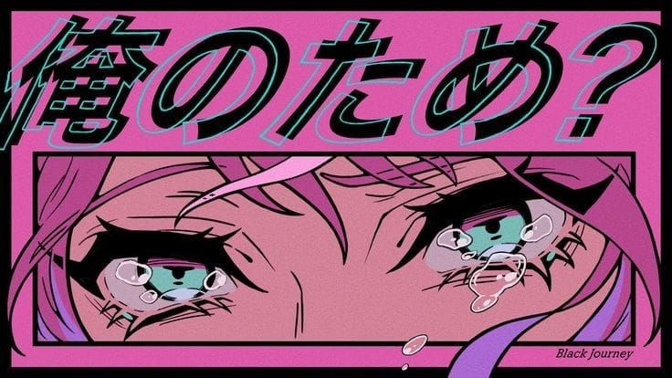

El estampado animé convierte la moda en una historia visual, llevando a los personajes y sus aventuras directamente sobre la tela, como un puente entre el arte y el estilo
Somos Takumi no Insatsu!, somos una empresa especializada en el diseño y estampado de camisetas y pantalones de anime, tenemos 2 años de experiencia y estando en este negocio, con el objetivo de llevar tu pasión por el animé a tu día a día. Nos decidimos a crear prendas únicas que capturan la esencia de tus personajes, escenas y universos favoritos, todo con una calidad excepcional y atención al detalle, Si eres amante del anime y buscas algo único para tu guardarropa, Takumi no Insatsu, es tu lugar. Únete a nuestra comunidad de Otaku y lleva tu pasión al siguiente nivel con nuestras camisas y pantalones exclusivos!

¿Eres un verdadero fanático del anime?
¡ Entonces nuestras camisas son para ti! En Takumi no Insatsu, nos especializamos en estampados exclusivos de tus series y personajes favoritos. Cada diseño es cuidadosamente seleccionado para ofrecer una prenda única que combine calidad, estilo y tú pasión por el animé. Desde los clásicos hasta los más nuevos, tenemos estampados que capturan la esencia de tus historias preferidas. Nuestra camisas y pantalones están hechos con materiales de alta calidad, cómodas y resistentes, para que puedas llevar tu amor por el animé a todas partes. Ya sea que quieras un diseño sutil o algo más atrevido, tenemos lo que necesitas para que tú estilo hable por ti. ¡ Visítanos y encuentra el estampado perfecto para ti!